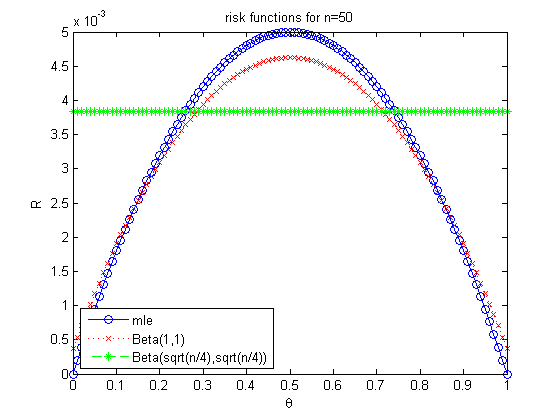
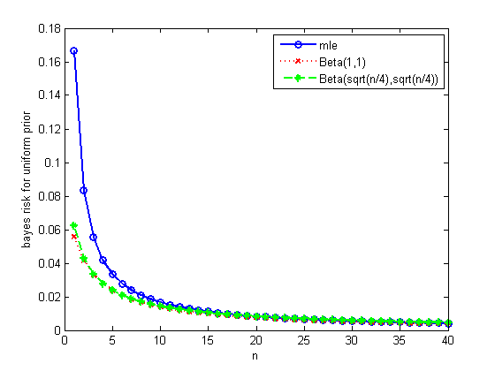

Bernoulli Risk Function Demo
Ns = [1 10 50];
for i=1:length(Ns)
n = Ns(i);
figure();
ps = 0:0.01:1;
R = ps.*(1-ps)/n;
plot(ps, R, 'b-o');
hold on
a = 1; b = a;
R = (n*ps.*(1-ps)) ./ ((a+b+n)^2) + ((n*ps + a)./(a+b+n) - ps).^2;
plot(ps, R, 'r:x');
a = sqrt(n/4); b = a;
R = (n*ps.*(1-ps)) ./ ((a+b+n)^2) + ((n*ps + a)./(a+b+n) - ps).^2;
plot(ps, R, 'g--*');
str = sprintf('sqrt(n/4)');
legend('mle', 'Beta(1,1)', sprintf('Beta(%s,%s)',str,str), 'location', 'southwest')
xlabel('\theta')
ylabel('R')
title(sprintf('risk functions for n=%d',n))
printPmtkFigure(sprintf('riskFnBernoulliN%d', n));
end
ns = 1:40;
figure();
R = 1./(6*ns);
plot(ns,R, 'bo-', 'linewidth', 2);
hold on
R = 1./(6*(2+ns));
plot(ns,R, 'r:x', 'linewidth', 2);
R = ns./(4* (ns+sqrt(ns)).^2);
plot(ns,R, 'g--*', 'linewidth', 2);
xlabel('n');
ylabel('bayes risk for uniform prior')
legend('mle', 'Beta(1,1)', sprintf('Beta(%s,%s)',str,str), 'location', 'northeast');
printPmtkFigure('riskFnBernoulliBayes');
ns = 15:40;
figure();
R = 1./(6*ns);
plot(ns,R, 'bo-', 'linewidth', 2);
hold on
R = 1./(6*(2+ns));
plot(ns,R, 'r:x', 'linewidth', 2);
R = ns./(4* (ns+sqrt(ns)).^2);
plot(ns,R, 'g--*', 'linewidth', 2);
xlabel('n');
ylabel('bayes risk for uniform prior')
legend('mle', 'Beta(1,1)', sprintf('Beta(%s,%s)',str,str), 'location', 'northeast');
printPmtkFigure('riskFnBernoulliBayes15to40');


 